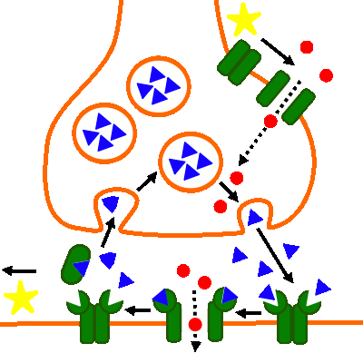

Erregungsübertragung (chemisch): Drogen- und Giftwirkung
Sarin
Abb. 1: Wirkung von Sarin
- Sarin konkurriert als kompetitiver Hemmstoff mit dem Acetylcholin um das
aktive Zentrum des Enzyms Acetylcholinesterase.
- Der Neurotransmitter wird nicht gespalten und liegt vermehrt im synaptischen Spalt vor.
Eine vergleichbare Wirkung hätte ein Wiederaufnahme-Hemmer, welcher die Endocytose blockiert.
- Es kommt zu einer verstärkten Depolarisation an der postsynaptischen Membran.

Abb. 2: Zum Vergleich: Normaler Erregungsübertragungszyklus
Externe Links
Sarin